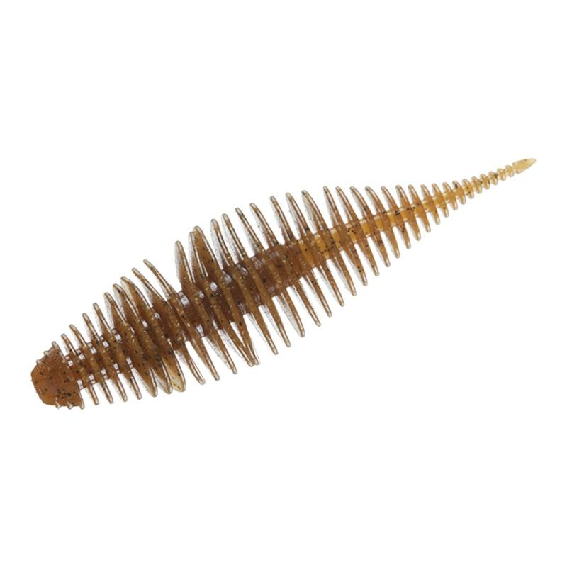
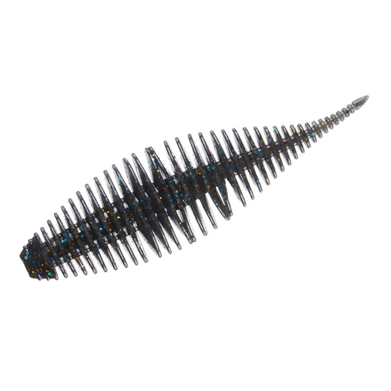
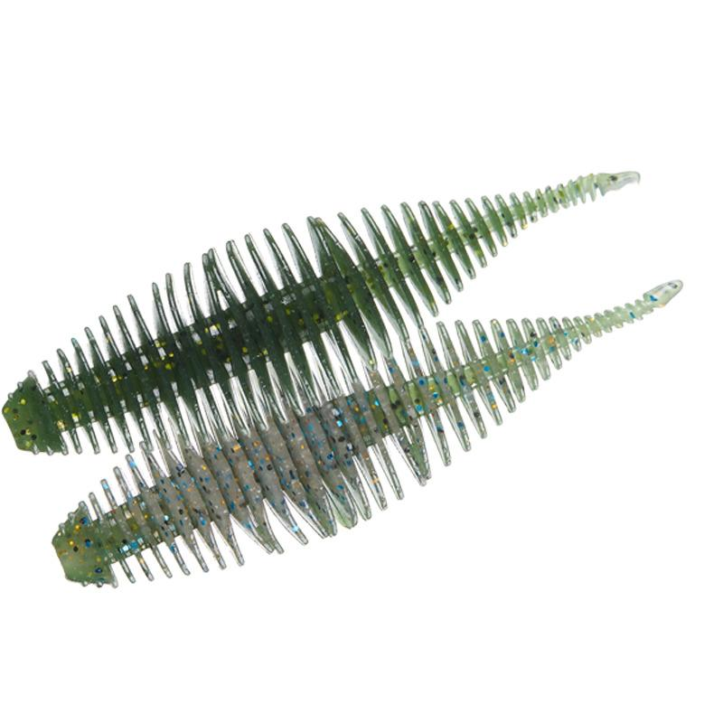
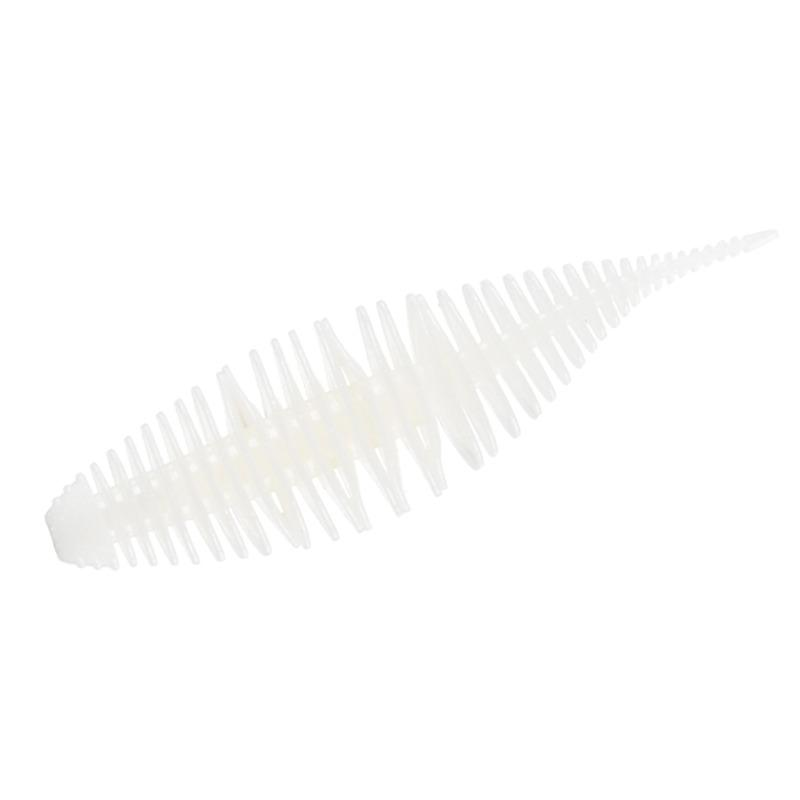

ベローズシャッド2.8
（BELLOWS SHAD 2.8）
ベローズシャッド2.8（BELLOWS SHAD 2.8）はGEECRACK（ジークラック）のワームです。
MLFツアーチャンピオンのアルトンジョーンズjr.が監修したUSAモデルで、ワイドボディのベローズギルをスリムにした形状。全身のリブが水を噛み、縦にも横にもうねる独特のアクションで魚を誘います。

画像出典:GEECRACK公式HP
スペック
- メーカー
- GEECRACK（ジークラック）
- タイプ
- 全身リブのシャッド型ワーム
- サイズ
- 2.8インチ
- 入数
- 6本
- マテリアル
- S.A.Fマテリアル（ソルトイン・アミノ酸・ストロングエビフォーミュラー配合）
- 推奨フック
- #1（ベローズフック：ZAPPU社）
- ターゲット
- ブラックバス
- 価格
- 913円（税込）
- 発売
- 2024年4月
▼今すぐチェック
ベローズシャッド2.8の特徴
しっかり水を噛んでうねる、全身リブのスリムなワーム
-
深いリングが水を噛み、味と匂いを伝える
繊細で深溝なボディのリング形状で、魚がしっかりくわえ、しっかり水を噛み、味と匂いもしっかり伝える。魚が口にした時も違和感なく吸い込ませやすい。
-
テールの先までナチュラルに動く
テールの先まで続くリング形状で、テールの先端までナチュラルなアクションが伝わる。わずかな動きでもボディ全体が反応する。
-
縦にも横にもうねるアクション
リング形状なので、縦にも横にもうねる独特のアクションが出る。ワイドボディのベローズギルをスリムにして、扱いやすくしている。
ベローズシャッド2.8の使い方
2.8インチはコンパクトなので、ネコリグやノーシンカー、軽めのテキサスリグなど、ライトなリグで使いやすいサイズです。
フォールで食わせたあと、小さくシェイクしてボディをうねらせるのがコツです。動かしすぎず、リブの微妙な動きで見せましょう。
ベローズシャッド2.8の得意な状況
プレッシャーが高く、大きなワームに反応しない場面が出番です。
コンパクトなシルエットで、スレたバスにも口を使わせやすくなります。
リブの微妙な動きで誘えるので、食い渋りの日でも釣れるチャンスを作れます。
ワンポイント
フックは公式推奨の#1（ベローズフック：ZAPPU社）を目安にしましょう。もっと存在感がほしい時は3.8インチ、大物狙いなら6.8インチが選べます。
ベローズシャッドのサイズの使い分け
| サイズ | 入数／価格（税別） | 推奨フック |
|---|---|---|
| 2.8inch | 6本／830円 | #1（本記事のモデル） |
| 3.8inch | 5本／830円 | #3/0 |
| 6.8inch | 2本／980円 | オフセットフック #7/0 |
2.8インチはライトリグ向き、3.8インチはカバー撃ちやトレーラー、6.8インチは大型狙いと使い分けましょう。
人気カラー
ベローズシャッドの人気カラーを紹介します。

グリーンパンプキンワームの定番。迷った時の1色に。

ブルーギルギルを食べているバスを狙う時に。

ヒヤケWMギルウォーターメロン系のギルカラー。クリアな水質に。

ホワイト白系で見せたい時や、濁りが入った時に。
画像出典:GEECRACK公式HP
▼今すぐチェック
ベローズシャッド2.8に似ているルアー
-
 ベローズスティック2.8
ジークラック
詳細はこちら＞
ベローズスティック2.8
ジークラック
詳細はこちら＞
同じベローズシリーズの全身リブスティック。ストレート形状で、ネコリグなどに使いやすい。
-
 ゴリドラス
ジャッカル
詳細はこちら＞
ゴリドラス
ジャッカル
詳細はこちら＞
2.8インチのシンキングスイムベイト。同じサイズ感で、巻いて誘いたい時に。
-
 ダークスリーパー
メガバス
詳細はこちら＞
ダークスリーパー
メガバス
詳細はこちら＞
ボトム専用スイムベイト。根掛かりしやすいボトムを巻いて探る時に。